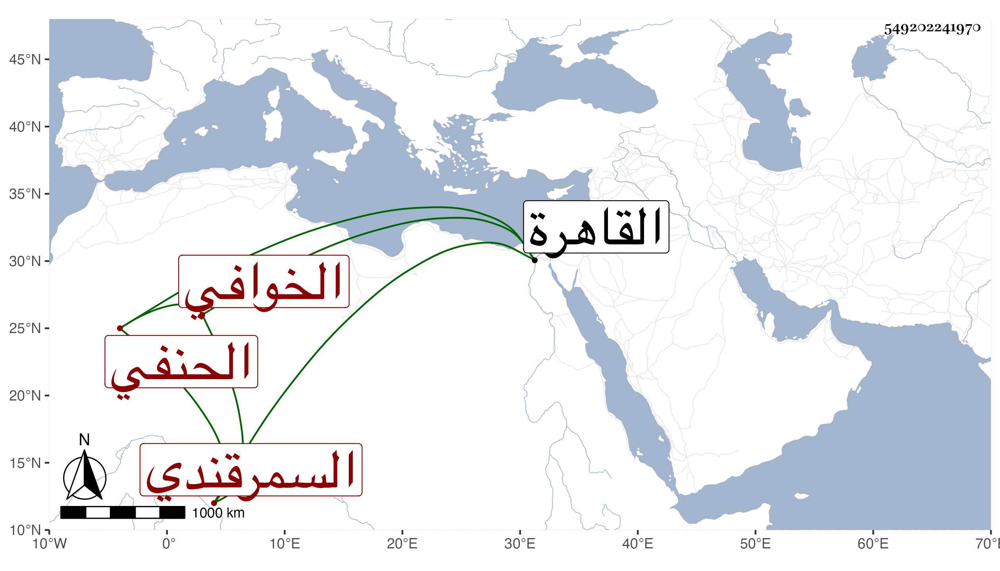

0902Sakhawi.DawLamic.ITO20230111-ara1.EIS1600.549202241970
Biography ID: 549202241970
231
محمد بن نهار الخوافي السمرقندي الحنفي . قدم القاهرة في سنة خمس وأربعين ليحج فأكرمه الكمال بن البارزي وأخذ عنه الطلبة فكان منهم النظام الحنفي حسبما قرأته بخطه فإنه قال أنه قرأ عليه البعض من توضيح التنقيح لصدر الشريعة ومن تلويح التوضيح للتفتازاني وأجاز لي فالله أعلم .
